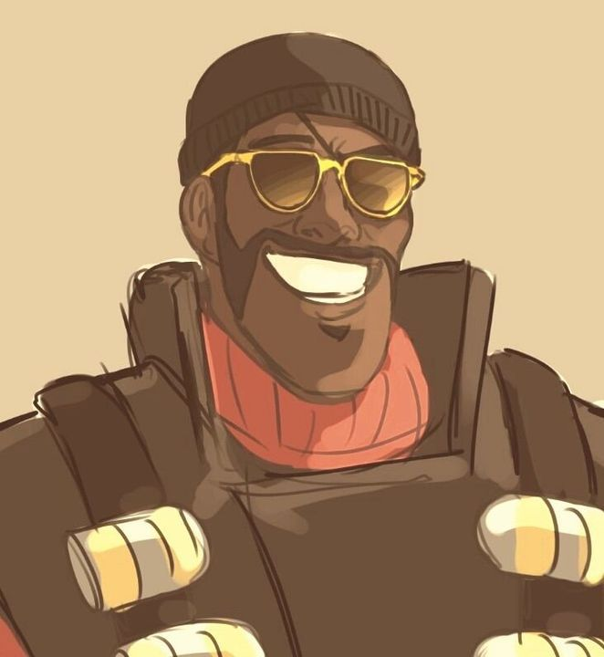

Origen: Ullapool, Escocia, Reino Unido
Salud: 175 HP
Velocidad: 93%
El Pyro es una clase de pirómano de origen indeterminado, con voz apagada y una pasión ardiente por todo lo relacionado con el fuego. Como se muestra en " Conoce al Pyro" , el Pyro puede sufrir delirios, visualizándose a sí mismo en un mundo de fantasía utópico conocido como Pyroland . El Pyro se especializa en combatir enemigos a corta distancia con un lanzallamas casero . Los enemigos incendiados sufren quemaduras posteriores y reciben daño adicional con el tiempo, lo que le permite al Pyro destacar en tácticas de ataque y retirada. Debido al corto alcance del lanzallamas, el Pyro es más débil a larga distancia y depende en gran medida de las emboscadas y de tomar rutas alternativas para sorprender a sus oponentes. Debido al alcance limitado del lanzallamas y a la baja velocidad de disparo de sus bengalas , el Pyro es bastante débil a media y larga distancia. La explosión de compresión del lanzallamas puede reflejar proyectiles enemigos , apagar a compañeros en llamas y reposicionar a los enemigos, incluso a aquellos que son invulnerables al daño.
